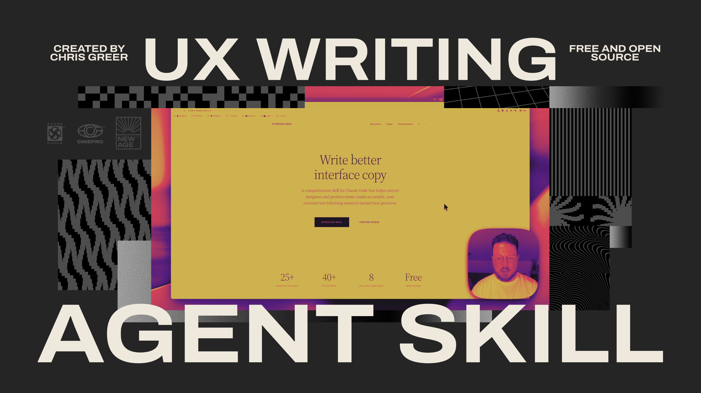
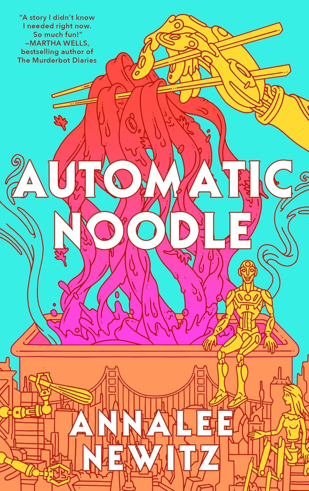
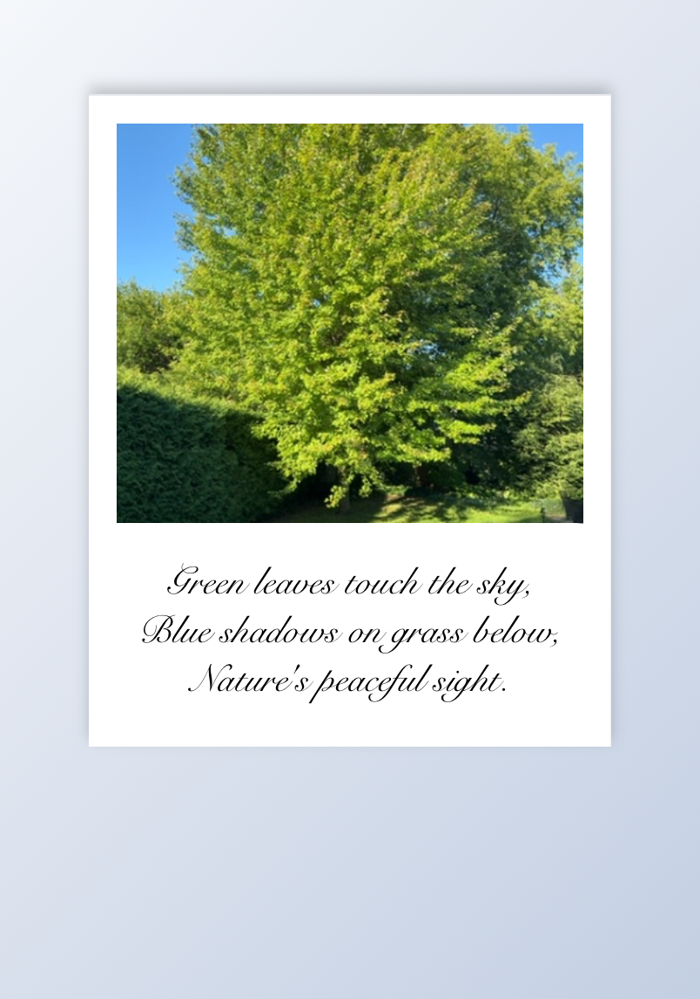

I built an open-source UX writing skill for Claude
I built something I needed: a UX writing agent for Claude that reviews interface copy directly from Figma.
Here’s what it does — you drop in a Figma frame link, and Claude uses the skill to audit your copy against UX writing best practices. Error messages that lack actionability. CTAs that don’t set clear expectations. Microcopy that creates cognitive load instead of reducing it.
This matters because we’re at an inflection point. AI tools are everywhere, but most content designers are still operating like it’s 2019 — manually reviewing every screen, writing similar strings over and over, burning cycles on work that should be systematized.
I’m releasing this as open source because I think our discipline needs to own how AI changes our work. Not defensively, not by pretending LLMs will replace judgment, but by building the tools that let us operate at a different level — less time on mechanical review, more time on strategic problems that require human expertise.
The technical foundation is Claude’s MCP + skills system. The content framework draws from years of practiced critique and established UX writing principles. The result is something that catches 80% of the obvious issues so you can focus on the 20% that actually requires your expertise.
If you work in content design, UX writing, or any adjacent discipline, the code is on GitHub. Contributions welcome — this gets better the more experienced practitioners feed into it.
🌐 Website: content-designer.github.io/ux-writin…
🐯 GitHub repo: github.com/content-d…
This is how I think content design evolves: not by resisting AI, but by building systems that amplify human judgment instead of replacing it.
Agree?
OK yeah, we’re in an AI bubble. Google announces Project Suncatcher
Slop fraud is coming for books: youtube.com/watch
Pulled noodles, pulled heartstrings in Annalee Newitz’s Automatic Noodle
We’ve all been told robots will take our jobs. What if they taught us how to resist instead?
The four robots in Annalee Newitz’s novella, Automatic Noodle (Aug 5, 2025), Staybehind, Sweetie, Cayenne, and Hands, do just that. This book has a big appetite despite its slim proportions. It confronts immigration, algorithmic prejudice, misinformation, and debt slavery. While it can’t fully explore all these themes, what emerges is a compelling model of communal resistance, exemplified by a robot-run, hand-pulled noodle shop in near-future San Francisco, where California has seceded from America after a brutal civil war.
In 2064, four abandoned HEEI (human equivalent embodied intelligence) robots wake in a flooded San Francisco ghost kitchen. Their owners have fled to America to escape fraud charges. Though technically citizens in post-war California, HEEI can’t own property or vote—leaving them vulnerable to being shut down and sold for parts. To survive, they hack city infrastructure and sentient blockchain contracts to open a noodle restaurant. Their success draws a coordinated review-bombing campaign from American operatives targeting California’s HEEI businesses.
Unlike the healing fiction trend from Japan and South Korea where bookshops and tea houses are safe havens, the cozy noodle shop in Automatic Noodle is under constant threat. The HEEI fight daily against systemic issues. Their hope is earned, not given.
Staybehind (military strategist), Sweetie (contract specialist), Cayenne (business operations), and Hands (noodle chef) unite to combat prejudice, using their specialized skills to stave off annihilation. The name of their restaurant, Automatic Noodle, started as a slur, but they decide to own it, making it part of their brand. When coordinated negative reviews tank their food delivery app ranking, they go old school, building an antique HTML website to sell their noodles instead.
The novella joins a growing movement in science fiction that rejects apathy and cynicism in favour of stories that embrace hope, community, and kindness in the face of adversity. It’s called hopepunk, as in the opposite of grimdark. Think Monk & Robot by Becky Chambers and The Murderbot Diaries by Martha Wells.
Automatic Noodle is billed as a “cozy near-future novella about a crew of leftover robots opening their very own noodle shop.” But it’s more than escapist fiction: it’s a battle cry disguised as comfort food. While it bites off more than it can chew and gives some themes surface treatment, it shows that resistance isn’t always about violence—sometimes, it’s about fighting for the right to make the perfect bowl of hand-pulled noodles and share them with friends.
Snap it. Shake it. Share it.
Take a photo. Shake your phone. A haiku “develops” on a Polaroid-style frame. Built in Gizmo as a quick AI × writing experiment.
What it is Haiku camera is a tiny tool that turns photos into Polaroids with a poem on the border. It’s playful, fast, and a little nostalgic.
How it works
- Snap a photo in the app.
- Shake your phone to “develop” the film.
- A haiku appears on the frame, tuned to the image’s vibe.
Why I’m building things like this I’m exploring the edge where AI meets writing. Small, shippable prototypes help me:
- Test how language feels when it’s generated in context.
- Find constraints that lead to better voice and tone.
- Turn abstract ideas about “AI and words” into hands-on experiences.
Design constraints I used
- The poem must be a haiku (5–7–5). Constraint breeds style.
- The language stays simple, concrete, and human.
- The “shake to develop” gesture gates the reveal—play drives delight.
- No instructions on the first screen. The product explains itself.
What I learned
- Physical gestures add meaning. The shake creates a beat; the poem lands stronger after a pause.
- Short form invites care. When you only get 17 syllables, every word earns its spot.
- Voice depends on context. The same model feels more “human” when tied to a clear frame and ritual.
Why this matters for AI + writing Most AI features are utilities. That’s fine. But the best product writing also carries emotion and timing. Pairing generation with a clear constraint (haiku) and a tiny ritual (shake) makes the output feel authored instead of dumped.
What’s next
- Add a few themed “film stocks” that shape tone (gentle, wry, punchy).
Try it Want to play with it? Find it on Gizmo. If you have feedback or a favourite frame, I’d love to hear it.
When I was in Grade 10, my English teacher introduced a metaphor that’s stuck with me ever since: imagine every word as a Rolodex of synonyms. Spin the card and “happy” becomes “joyful,” “sad” becomes “despondent.” It was a playful way to think about language—a reminder that writing isn’t just about following rules, but about experimenting and discovering new possibilities.
That sense of play is what gives sentences their spark. When you treat writing as a game of form and structure, you’re free to defy expectations and land on fresher words, sharper turns of phrase, and more memorable meaning.
Recently, I rediscovered this spirit of play through Gizmo, an app that lets you build, remix, and share word tools in minutes. Inspired by its vibe coding and TikTok-style feed, I decided to make my Word Rolodex idea a reality. What might have taken hours was finished before my morning coffee—reading level, word count, save/share, and a few fun themes, all baked in.
Play isn’t just for writers. It’s how we find new solutions in tech, product, and design—and create experiences that feel genuinely human.
If you want to try the Word Rolodex, check out the app (link below). And let me know: How do you keep play alive in your own creative work?

Katabasis takes us deep into the underworld of the mind
Like the stinging wasps in Dante’s Inferno, something needled me as I read Katabasis, the latest from R.F. Kuang, academic and best-selling author of Yellowface, Babel, and The Poppy War series.
Katabasis, meaning descent into the underworld in ancient Greece, serves as title, plot device, and metaphor, culminating in a satire of academia.
When Grimes, a brilliant-but-toxic Cambridge professor, dies in a “magick” accident, Alice, our protagonist, is to blame. She made an error while prepping a pentagram for him and blew him to smithereens. With her academic and career prospects gone, Alice decides to follow him into Hell and bring him back. Who else but Grimes could approve her thesis and write the recommendation letter she needs to get a job?
But there’s a price. She must sacrifice half of her remaining life to cast the spell to descend into Hell.
Here’s the rub: I didn’t find this motivation believable. Really? Half a life for an academic posting? What a terrible bargain! Grimes made Alice miserable. There are other career paths. Who would make that trade?
But as I read on, I realized I’d been fooled. Alice’s actions were intentionally hard to believe. The rigours of Cambridge academia had sapped her will. Of course she’d sacrifice half her life to enter Hell and rescue Grimes, her ticket to prestige and validation.
Alice isn’t the only one willing to make that trade. Peter, the class golden boy, also descends to hell to rescue Grimes and his prospects.
Alice, cursed with a perfect memory by a cruel Grimes experiment, is “tired of the contents of her mind.”
“Alice had thought rescuing Professor Grimes from Hell was the solution to her problems—but why go to all that effort?” she asks herself on the banks of the Lethe, a mythical river in the underworld that washes away all memory. “She almost laughed. Here was the real answer: to wash away the dregs upon her mind and come out the other side dewy clean; a mewling babe ready to start afresh.”
Alice’s descent into Hell—which, not coincidentally, resembles Cambridge—is a metaphor for her mental health. She’s trapped between a desire for success and approval and a craving for oblivion. Given that, sacrificing half of her remaining life doesn’t sound so bad.
Katabasis has fantasy hallmarks like climactic battles, bizarre creatures, and exotic climes, but it is also a satire of academia, an interrogation into the cost of pursuing knowledge, and an exploration of seeking significance in a world that often feels indifferent.
Some might find the academic language and concepts alienating, but they reward a curious mind and make the characters seem more authentic. After all, they’re scholars. If you don’t mind some pretentious terminology, it’s worth the read.
Advanced reader copy provided courtesy of Harper Voyager for this review. Katabasis was published Aug 26, 2025.

Belching bishops and domestic affairs: a review of The Pilgrimage by John Broderick
Alright, I’ll admit it: I have a crush. But this isn’t just any crush. It’s on a bookstore: McNally Jackson in New York City.
Have we met? No. Do they know I exist? Also no. Would I drop everything and move to NYC to be with them? Certainly not. They’re a bookstore. That would be ludicrous.
Will I read everything they publish through McNally Editions? Yes, yes, a thousand times yes.
McNally (I like to think we’re on a first-name basis) has done a significant service for the literary community by rescuing The Pilgrimage by John Broderick, a novel banned upon its 1961 publication by the Irish Censorship of Publications Board, from obscurity.
I should explain. This is what McNally Editions does. They find “unduly neglected books and authors” and give them new life in very prettily designed editions.
Let’s get to the book. In 1961, Catholic doctrine heavily influenced Irish law. Books were banned for contradicting social mores. The Pilgrimage, with its extramarital affairs, homosexual liaisons, belching priests, and critique of miracle cures, stood no chance.
Broderick, a gay man raised Catholic in Ireland, viewed the ban as a “badge of honour.” Sounds like my type of guy. But it had consequences. Despite his brilliance, he never achieved the same success as compatriot Edna O’Brien. It wasn’t until later that The Pilgrimage was recognized for its quality.
The story is told from Julia’s perspective, the wife of Michael Glynn, an obscenely rich, bed-ridden man 20 years her senior. He is implied to be gay, leaving her starved for affection. She finds it in Jim, Michael’s handsome doctor and nephew, and later Stephen, the peculiar household servant.
Julia breaks the meek, subservient mold the Censorship Board no doubt preferred for a female character. She’s unapologetic about her sexual appetites and speaks her mind—traits for which she ultimately pays the price.
When letters arrive at the Glynn home detailing Julia’s affair with Jim, pressure mounts. The claustrophobic town is “watchful as a jungle.” Whispers of impropriety can destroy lives. God forbid you wear the wrong hat to church on Sunday.
Broderick’s prose is clean, polished, and unadorned, hiding a messier reality through allusion and inference. This makes The Pilgrimage more than a diatribe against the oppressive Catholic regime. Rather than rail against the Church, it subtly undermines it.
“‘God is good,’ said the bishop. He raised his hand to his lips and belched delicately.”
Readers who appreciate psychological realism and nuanced explorations of sexuality, faith, and social constraint will find much to appreciate here.
The Pilgrimage deserves its rescue from obscurity. At a time when books are getting banned, it’s a reminder that the most dangerous books are often the most necessary.
The Pilgrimage was originally published by 1961 by Weidenfeld & Nicolson, London. The First McNally Editions paper came out in 2025.

Book review: the many contradictions of Mark Twain
Over the course of Ron Chernow’s lengthy (and I mean lengthy) new biography of Mark Twain, the titular subject comes to feel like a beloved house guest who overstays his welcome. Yet, once gone, he is missed terribly. Such is the paradox of Twain—a man whose contradictions exhausted and enthralled me.
Chernow’s biography focuses on Twain the man, not his literature. Beyond a few excerpts, we see little of his fiction. Instead, we see many letters. These, while fascinating, show us less of the storyteller and more of the restless, troubled soul behind the wit.
Twain was mercurial, eccentric, and frustrating. His private life was turbulent and full of sorrow—most of it self-inflicted. His letters reveal a man who could craft America’s sharpest satire yet couldn’t see the irony in his actions. This is the genius of Chernow’s choice to focus on Twain’s letters: we read on and on, eager to learn how he next shoots himself in the foot.
Twain’s most befuddling contradiction emerges from his relationship with money. Despite his success as a writer and advantageous marriage to Livy, daughter of a coal baron and heiress to a fortune, he wanted to strike it big in business. He was not immune to the get-rich-quick schemes typical of the Gilded Age (a term Twain himself coined). He invested a fortune in the Paige Compositor typesetting machine, convinced it would revolutionize the newspaper industry and make him a titan of industry. He also started his own doomed publishing company. Ultimately, his investments bankrupted his family and forced them to abandon their beloved Hartford home.
Twain paid off his creditors in 1900. Yet, as Chernow notes, “nothing could quench his thirst for speculation, not even bankruptcy.” The man who skewered human folly in his writing seemed blind to his own—after recovering from near-ruin, he plunged into another dubious venture: Plasmon, a health food product derived from skim milk he encountered in Austria. It failed.
Twain’s contradictions defined his business ventures and worldview. In later life, he advocated for African Americans and women’s rights, but was blatantly racist toward Native Americans. He was hilarious and charming in public, but cutting and vindictive in private. He loved his family dearly, but caused them pain through neglect or impulsivity. Through these paradoxes, Twain embodied America—a nation founded on freedom while enabling slavery, preaching equality while practicing discrimination.
This biography captures the complexity of America’s most celebrated humorist, justifying its considerable length. Chernow doesn’t attempt to reconcile Twain’s contradictions or excuse them—he presents them with unflinching clarity. The result is a portrait that feels more human and exasperating than the genial funny man we think we know. Like a houseguest who lingers too long, Twain may exhaust us, but his absence leaves a void of charm, humour, and intrigue that no amount of critical distance can fill.
“Mark Twain” by Ron Chernow was published on May 13, 2025, by Penguin Press, and comes in at 1,174 pages. The book was provided courtesy of the publisher for this review.

Review of “Perspective(s)” by Laurent Binet: Renaissance Scandal Meets Modern AI Concerns
Nasty rumours, intricate plots, boldfaced lies, declarations of love, and accusations of murder—letters containing all these flit across Renaissance Italy in Laurent Binet’s epistolary “Perspective(s)” (translated by Sam Taylor, 2023). With a plot as finely woven as a tapestry, we follow Giorgio Vasari, artist and attack dog for Duke Cosimo de’ Medici, investigating the murder of Jacopo da Pontormo in the chapel of San Lorenzo, where he’s been working on a divisive fresco for 11 years.
Jacopo is found with a chisel in his heart. A section of his fresco seems to have been repainted by someone skilled enough to emulate the old master, but not to avoid detection. Duke Cosimo tasks Vasari, a real-life painter and chronicler of Renaissance artists, with finding the murderer. What follows is a whodunit mystery told through 176 letters from 20 larger-than-life characters pulled straight from the art history books.
Both paintings in this story are scandalous. Jacopo’s fresco is controversial due to its mannerist style, with elongated nude figures and depthless spaces. Vasari, a fan of traditional perspective and chronicler of Leonardo da Vinci and Michelangelo, calls it “truly awful.” The other is a nude Venus with the face of Duke Cosimo’s 17-year-old daughter, Maria de’ Medici—a humiliation for the Medici family that threatens her marriage prospects.
When Catherine de’ Medici, Queen of France and Maria’s aunt, learns of the Venus painting, she sees a political opportunity. She plans to steal it, make copies, and distribute them through Europe, undermining Cosimo’s authority.
This Renaissance scandal involving non-consensual imagery of a young woman feels relevant today. Almost 500 years later, our society still grapples with similar ethical questions—now in the form of AI-generated deepfakes instead of oil paintings. Last week, the “Take it Down Act” passed in US Congress, aiming to curb this type of violation. Through his historical fiction, Binet challenges the notion that privacy concerns are uniquely modern or tied to a particular medium.
The epistolary format—a bold choice that could have been dull in lesser hands—privileges us with information the characters don’t have. This use of dramatic irony keeps us engaged despite the fragmented structure. When Catherine learns that Maria, unhappy with her political betrothal to the Duke of Ferrara, has an affair with her father’s page, she encourages her niece to follow her heart and elope to France. Sweet, right? Not quite. Catherine’s other letters show she’s content to ruin her niece’s life to harm her nemesis, Cosimo. And ruin it she does.
Maria’s tragic tale contrasts with absurd levity. The novel oscillates between political intrigue and cinematic action, as when Vasari uses perspective painting technique to fire his crossbow right between the eyes of an attacker.
The letters by Benvenuto Cellini, the flamboyant and braggadocious thief Catherine hires to steal the Venus painting, are a treat. “God must love you, Madame,” he says to Catherine, “for he has placed me upon your path.”
That’s certainly one way to address a sitting queen.
“Perspectives” is a salacious, laugh-out-loud delight written in crisp, witty prose that makes even art history novices feel in on the joke. Binet reveals the worst behaviour of major historical figures through language that feels both period-appropriate and accessible. “What a drag!” says Maria at one point, but this novel is anything but.
Readers of historical fiction will appreciate this novel, especially those interested in art history or Renaissance politics. Even those less familiar with the period will be engaged by the themes of power, privacy, and consent that remain urgent today.

AI won’t write literature—but it might push it forward
Sam Altman, CEO of OpenAI, recently shared a short story written by an unreleased large language model (LLM) that is “good at creative writing.” He claims it’s the first time he’s been “really struck by something written by AI.” Critics were divided on the story’s quality, but I’m not here to debate that. The hoopla got me thinking: is AI capable of writing literature?
I’m not an expert in literature or AI, but I have some experience in both. I have a degree in English, published a few short stories, and work as a content designer in tech. I’ve created AI writing tools like Pair, and my wife and I own a bookstore. All told, I’m usually either writing or thinking about writing.
Now, with AI’s arrival, I wonder: what’s the point of perfecting my craft? Why go through the hassle if it can write something just as good—or better? Just last week, I suggested some copy for a new screen and was rebuffed. Why? Because the original copy was a suggestion from the very AI writing tool I created.
Before we can answer if AI can write literature (now or in future), we must define it.
Definitions have changed over time. Plato was ambivalent toward literature, viewing it as mimesis (imitation). According to him, poets were mere imitators of the world, and their works were far from the truth. The same could be said of AI. What is it, after all, if not an imitator, trained on pre-existing content?
Aristotle agreed with Plato, but added that literature was an effective learning tool. Horace noted that literature not only instructs but delights. This idea persisted through the Renaissance, when figures like Sir Philip Sidney rediscovered and embraced it.
AI can certainly instruct and delight. Tools like ChatGPT are reshaping education. And in Sam Altman’s case, AI evoked an emotional response with its short story. Maybe AI can write literature after all?
Let’s jump ahead a few thousand years to Freud, Jung, and Lacan. They saw literature as an expression of subconscious desires, fears, and conflicts. Does AI have a subconscious? It’s tempting to think so. Even its creators hardly understand the neural networks underpinning its knowledge. But I think not. The subconscious is an active force influencing behaviour. By definition, AI is passive. It awaits instructions. Connections in its neural networks activate only when prompted.
Maybe I’m being unfair. Don’t I also need prompting? I sometimes sit staring at a blank page until an external force—a deadline, an idea, a memory—prompts me to write. Maybe the difference between human and AI creativity is a matter of degree rather than kind.
AI can instruct, delight, and write a passable imitation of a literary text. But it lacks the vitality of literature. What makes literature human is the effort of creating it. We reach out to share our experience of life—and someone is there to receive it.
To me, the beauty of literature is that it allows us to share experiences of other worlds, times, spaces, and cultures.
A reader lives a thousand lives before he dies. The man who never reads lives only one. - George R.R. Martin.
I’d argue that AI can’t write literature, but it can improve it, driving it forward in exciting new directions. Literature and the literary canon are far from perfect. They’re predominantly male, white, and Western. AI is trained on these past works, reflecting these biases and imperfections. But that doesn’t mean the future of literature must as well.
When photography emerged in the 1830s, painters wondered if it meant the death of their profession. Many predicted the end of painting. Why commission a portrait that took weeks or months when a photograph could produce a likeness in minutes? This led artists to question what painting could do that photography could not. They began to use paint to evoke the emotions of colour (Impressionism), the psychological interior (Expressionism), and pure abstraction. Photography did not end painting—it liberated it.
I hope literature, like painting, will embrace bold new directions that are inclusive of all humans, cultures, and languages. What might that look like? Perhaps writing that engages with unique experiences, or makes the struggle of composition a central theme. I don’t pretend to know. But I do know that for literature to progress, we must maintain our vitality. So go! Write! Experiment! I know I will be.

Vampires and Vengeance: Review of The Buffalo Hunter Hunter
You haven’t read a book like The Buffalo Hunter Hunter before. This captivating, disturbing blend of vampire mythology and Indigenous history offers something new to the horror genre. Released on March 18, 2025, this nested narrative holds a dark and cracked mirror to America’s genocidal past.
The story begins when Etsy Beaucarne, a junior professor desperate to get published and secure tenure, discovers the journal of her great-great-great-grandfather, Arthur, a Lutheran pastor in early 1900s Montana. Through his ornate Victorian prose—equal parts charming and suspect—we encounter Good Stab, a Blackfeet man whose weekly “confessions” make up the bloody third frame in Jones’s triptych.
Good Stab’s confessions unfold against the backdrop of the American West and the atrocities against Indigenous peoples, specifically the Marias Massacre—where approximately 200 women, children, and elderly men were killed in their sleep by the U.S. Army.
When Good Stab encounters American soldiers transporting a mysterious “Cat Man,” the chaos of battle leaves him bitten and transformed. He becomes what Arthur, reverting to his native German, calls the Nachzehrer—a vampire.
“What I am is the Indian who can’t die,” says Good Stab. “I’m the worst dream America ever had.”
Good Stab’s vengeance against white settlers becomes Jones’s most challenging narrative gambit. The relentless bloodshed of the middle section tests our endurance. The violence is deliberately excessive, forcing us to confront the scale of historical atrocities: the Marias Massacre, the decimation of Indigenous populations, the extinction of the buffalo. Jones makes us uncomfortable witnesses, denying us the luxury of looking away.
Life as a vampire is no easy task. Good Stab suffers all manner of injury and oscillates between starvation and gluttony. He also endures psychological torment. Like the Cat Man, he slowly becomes the thing he feeds on, presenting him with an impossible choice: consume the very people he hopes to avenge or become the thing he hates most.
Jones, a member of the Blackfeet Nation, isn’t spinning a supernatural revenge fantasy. Through Good Stab’s transformation, he explores how violence changes the avenger. The feeding metaphor captures how trauma can perpetuate itself across generations, with victims adopting the behaviours they once suffered under.
Some might find Arthur’s archaic language and Good Stab’s Blackfeet terminology difficult to parse. But these linguistic layers add authenticity and emotional weight to the story.
Arthur, in particular, is utterly charming. His penchant for good food and affection for the cat he rescues from a house of ill repute make him likeable. It’s all the more shocking, then, when he is revealed to be something of a monster himself. As he says, he “can be convincing when allowed to paint with words.” In this meta-commentary, Jones challenges us to question the narrative frame we’re reading—whose stories get preserved, who interprets them, and how appealing prose can disguise monstrous realities.
While The Buffalo Hunter Hunter may test readers' endurance with its violence, Jones has created something unprecedented: a vampire narrative that uses horror conventions to expose America’s refusal to confront its bloody foundations. It’s not just a timely book—it’s a necessary one, suggesting that some historical debts can never be paid, only acknowledged. In Jones’s American gothic, the real horror isn’t the monster but the country that created it.

Book Review: Three Days in June explores faithfulness, forgiveness, and family
Anne Tyler’s Three Days in June is a svelte, finely crafted exploration of faithfulness, forgiveness, and family. Her sentences string together like the lace of a wedding veil, a gossamer that reveals complexity when held up to the light.
The domestic drama centres on Gail and Max, a divorced couple whose opposing temperaments mirror the eternal Tyler question: how do difficult people find love?
Gail, recently ousted as assistant headmistress for her lack of social grace, represents Tyler’s archetype of the prickly outsider. Max, with his impromptu arrival (shelter cat in tow) and easy charm, is the social butterfly who might save her. It’s territory Tyler explored before, notably in The Accidental Tourist.
Tyler’s skill lies in making Gail’s social ineptitude both cringe-worthy and endearing. When she bluntly tells a wealthy parent that their daughter “doesn’t have the slightest chance of getting into Princeton,” we wince and laugh. But beneath the comedy lies a deeper truth: her frankness makes her uniquely qualified to provide the raw honesty required for true forgiveness. Her bluntness is both her curse and salvation.
The novel’s crisis arrives when Debbie discovers her fiancé’s infidelity on the eve of their wedding. When she shares the news with her parents, it brings old wounds to the surface: Gail, too, had a brief affair with a colleague while married to Max, leading to their divorce.
Max, the wronged party in his marriage, advocates for patience and forgiveness, while Gail, the former adulterer, pushes for the wedding to be canceled. This reversal suggests our harshest judgments stem from unresolved guilt.
Debbie decides to proceed with the wedding. “I refuse to be one of those wives who hold a grudge forever. Who won’t forgive their husbands for one little stupid mistake,” she says.
Gail and Max are left to confront the infidelity that caused their divorce. Max opens the door to forgiveness not with dramatic speeches, but with thoughtful gestures. The man who used to leave a clutter in his wake now prepares lunch (grilled cheese and frozen pot pies) and does the dishes.
Their icy standoff begins to thaw. The cat Max brought acts as a stand-in for himself. It gets comfortable at the house. Gail, initially insistent she wouldn’t adopt the cat, gradually warms to it, allowing it to sit on her lap while she scratches its ears.
Tyler captures the intimacy of spouses—how they complete each other’s stories, anticipate reactions, and share a vocabulary built over decades. As Gail eats lunch with Max at one of their old haunts, she reflects on “those married couple conversations that continue intermittently for weeks… branching out and doubling back like a piece of crochet work,” showing how a shared history can bring both pain and comfort.
Tyler concludes her story with understated grace. When Max leaves and returns moments later, the scene feels inevitable—but not contrived. The parallel resolutions of parent and child suggest not that history repeats itself, but that each generation must find its own path to reconciliation.
Tyler mines profound truths from ordinary lives. Three Days in June is a triumph that shows why, after twenty-five books, she remains one of our best chroniclers of family life.
“Three Days in June” by Anne Tyler was published Feb 11, 2025, by Alfred A. Knopf. This review was of an uncorrected proof from the publisher.

BBC Radiophonic Workshop passes the torch from electronic music visionaries of the past to those of the future. Check out the collection

Book Review: Lesser Ruins Captures Modern Loss
“Anyway, I think, she’s dead, and though I loved her, I now have both the time and freedom to write my essay on Montaigne . . .” With these startling words, Mark Haber launches his tragicomic third novel, Lesser Ruins. It’s a story of a widowed professor who immerses himself in an endless academic project, apparently more concerned with footnotes than grief.
Yet as the novel unfolds, what at first appears callous turns out to be a defence mechanism. The narrator makes avoidance an art form, embracing distraction to avoid his grief. He can’t stand to go near his wife’s closet, which still smells of her, so he avoids it. Happy memories of their life together lead to despair, so he casts them aside. The structure of Lesser Ruins mirrors this evasion, each digression a way to avoid confronting grief.
But it’s not all doom and gloom. Haber balances heavy emotional themes with genuine humour. The passage about an espresso machine exploding under the narrator’s desk is raucously funny. The constant calls from his son, Marcel, a DJ with a tendency toward lengthy monologues on electronic dance music, are also hilarious.
The narrator’s book on Montaigne, the French Renaissance scholar and inventor of the essay, never materializes. He spends years obsessing over the project but produces only hundreds of potential titles and notes on tangential topics. His excuse is that he requires a “mental Sahara” of uninterrupted focus. But he’s betrayed by his eagerness to respond to distractions. Each hankering for coffee or ping from his phone becomes another escape from the task at hand—and from the grief that lurks behind it.
Even when the narrator secures his coveted “mental Sahara” at an artist’s colony, he swiftly manufactures a fresh diversion: fixating on the absurd thirty-minute checkout limit for Montaigne’s diary. The perfect conditions reveal that distraction isn’t something that happens to him—it’s something he creates. This becomes even clearer through his encounters with his neighbour Kleist, a Holocaust survivor and sculptor who represents everything he isn’t. Unlike our narrator, she transforms her trauma into art, creating sculptures that confront past horrors. But her tragic end raises the question of whether this method of handling grief is more effective than our narrator’s constant distraction.
Lesser Ruins transforms mundane modern habits—checking our phones, pursuing the perfect cup of coffee—into something comic and profound. These aren’t just distractions. They’re survival mechanisms in a world where grief competes with push notifications for our attention. The narrator’s inability to write his Montaigne book becomes less about writer’s block and more about the fundamental nature of modern loss.
The fragmentary structure of Lesser Ruins won’t suit everyone. Some may find its three-paragraph format and constant digressions challenging, but that’s what makes this book special. By immersing us in the narrator’s scattered consciousness, Haber achieves something rare: a novel that captures both our current cultural condition and the timeless struggle to face mortality. It’s an impressive achievement that, unlike its narrator’s diversions, demands and rewards our complete attention.

Book Review: Playground by Richard Powers
Playground, the latest from Pulitzer Prize winning author Richard Powers, uses the island of Makatea as a microcosm for contemporary debates about AI, environmental justice, and neocolonialism. Through its exploration of the interconnectedness of humanity, technology, and nature, it challenges us to confront the choices and consequences before us.
Blurred lines abound in Playground, where past overlaps with present, human detritus entwines with nature, and artificial intelligence tangles with its progenitor: the human mind. The experience is disorienting. I often flipped back and forth to remind myself of the time period. Certain characters disappear from the narrative for long stretches, forcing me to consult my notes. But perhaps disorientation is the intended effect. By jumping between time periods, characters, and settings, Powers invites us to question convention. The text’s structure puts us in a speculative mood – and makes us more receptive to unconventional ideas.
For example, Powers questions the rote dichotomy between humans and nature. As cohabitants of the same pale blue dot, there’s more that unites than divides us. As Evie, an oceanographer who has been subaquatic since her father chucked her into a pool to test an aqualung prototype, says, “No human being knew what life on Earth really looked like. How could they? They lived on the land, in the marginal kingdom of aberrant outliers.”
This comments on our limited knowledge (80 per cent of the ocean remains uncharted and unseen). But more so, it challenges the idea that humans and nature are separate. We are part of nature. So much so that we cannot see the metaphorical forest for the trees or, rather, the ocean for the puddle.
Powers uses evocative imagery to break down this barrier between the human and natural. Octopuses use glass jars to replace shells they’ve lost to evolution. Pygmy seahorses cling to plastic straws like host kelp. Ina, a sculptor on Makatea, collects plastic from the belly of a dead seabird for one of her creations.
This can be read as a comment on overconsumption and pollution, and in a sense, it is. But more so, it’s an assertion that humanity is not separate from nature. They are one and the same. We drink from the same cup, and humanity is poisoning the well.
Much in the same way, the novel questions the dichotomy between human and machine. AI evolves rapidly, making it hard to distinguish between genuine and artificial intelligence.
A generation before the novel, phosphate mining ravaged Makatea and its inhabitants. Now, they face a choice: welcome back outsiders wanting to use the island as a launch point for a techno-futuristic floating city, or cling to their traditional way of life.
Before voting, they consult an advanced AI named Profunda, shared by Todd Keane, the main narrator and initiator of the floating city project. It’s an evolution of the titular Reddit-esque social media site he created after stealing the idea from Rafi Young, his one-time friend and Go companion who now lives on Makatea.
Profunda can manipulate human emotions and actions. As the islanders interact with it, we must ponder whether it is an impartial intelligence or manipulating them for its creator.
We’ve poisoned the oceans. Who’s to say we haven’t poisoned AI? After all, it is trained on the Internet, a veritable ocean of humanity’s best and worst.
I won’t spoil the ending by revealing the islander’s decision, but I was pleasantly surprised. The disorienting experience of reading Playground left me unprepared for the resounding conclusion, where Powers weaves the disparate threads of this tale together with rare skill.
Playground (2024) by Richard Powers is published by Random House. Pages: 400. It was longlisted for the 2024 Booker Prize and shortlisted for the 2024 Kirkus Prize.
Originally published in The Creemore Echo.

Pouring one out for Garth Hudson, the last surviving member of The Band and the “most brilliant organist in the rock world” according to Keyboard Magazine. youtu.be/X4kJKiLIj…
Book review: Held explores echoes of trauma
If you’re looking to cozy up and get lost in a ripping yarn, Held by Anne Michaels isn’t the book for you. But if you’re up for confronting life’s biggest questions, it might be your cup of tea.
The novel opens in 1917 with John, a severely injured British soldier reminiscing about his lover, Helena, from a First World War battlefield. The narrative jumps to 1920, where he reunites with her and reopens his photography business. It follows their lives and their descendants, including their daughter, Anna, her husband Peter, and their daughter Mara. Like her grandmother, Mara is a nurse in a field hospital, much to the dismay of her war- journalist lover, Alan.
Held, which recently won the Giller Prize, defies convention. There are no recognizable character arcs or tidy plots with satisfying resolutions. It unfolds in fragments, giving it a dreamlike quality. Characters flit in and out. Time shifts between past, present, and future.
Michaels challenges us to engage with this structure. She leaves space between the fragments for us to fill. Like memory, the novel avoids linearity. Past intrudes on the present. Pieces disappear, lost to time.
War binds the narrative, manifesting in John’s lasting injuries, the ghostly figures in his photographs of war widows, and the anxiety connecting Peter and Alan across generations. This motif reinforces the novel’s exploration of how trauma echoes through time.
But so too does love, which appears as both counterpoint and companion to war’s devastation. In a touching passage, coastal women intentionally knit errors into the sweaters of their husbands to identify them if they drown at sea. These mistakes are a message sent “into darkness” hoping for a safe return – a metaphor that captures the novel’s central preoccupation with love’s persistence beyond death.
The opening line asks, “We know life is finite. Why should we believe death lasts forever?” Can the dead truly be gone when they leave an imprint on the world? Does the fact something can’t be seen, heard, or felt mean it doesn’t exist?
Michaels pulls at these strands. Ghosts appear in John’s photos of war widows. Marie Curie, whose pioneering work with radiation revealed invisible forces shaping our world, appears later in the novel. Her presence reinforces the book’s central metaphysical question: how do we measure or understand that which cannot be seen? Both Curie’s science and John’s ghost-laden photographs suggest that reality extends beyond what’s immediately visible. Ultimately, we are left with only questions, not answers.
While many fragments shimmer with beauty and insight, the novel’s experimental structure comes at a cost. The characters often feel more like vehicles for philosophical pontification than fully realized humans. Their dialogue can be stilted and unrealistic, weighed down by the heavy ideas they’re meant to convey. The book might have been more effective if these existential questions emerged naturally from believable interactions.
The dialogue reads like philosophical treatises rather than conversation. Characters speak in aphorisms: “Terror can spring from what’s most ordinary,” says Marcus, to which Sandor responds, “Just as love can.” Even John’s political musings, “No political system operates without free will’s submission,” feel more like lectures than natural speech.
Despite this shortcoming, Held is an ambitious and moving meditation on love, memory, and the visible and invisible bonds connecting us across time. Michaels refuses simple divisions between science and spirituality, life and death, past and present. Like the intentional errors in those coastal sweaters, the novel’s fragmented structure becomes its own kind of message sent into darkness – challenging readers to find meaning in the spaces between.
Originally published in The Creemore Echo

Street Style
The Nokia Design Archive released earlier this week is a treasure trove of great design. This slide from a 2003 presentation on the “street style” user group (skateboarders, snowboarders, BMX bandits, slam-dunkers, break dancers, stage divers) even includes precursors to AirPods and the Apple Watch.